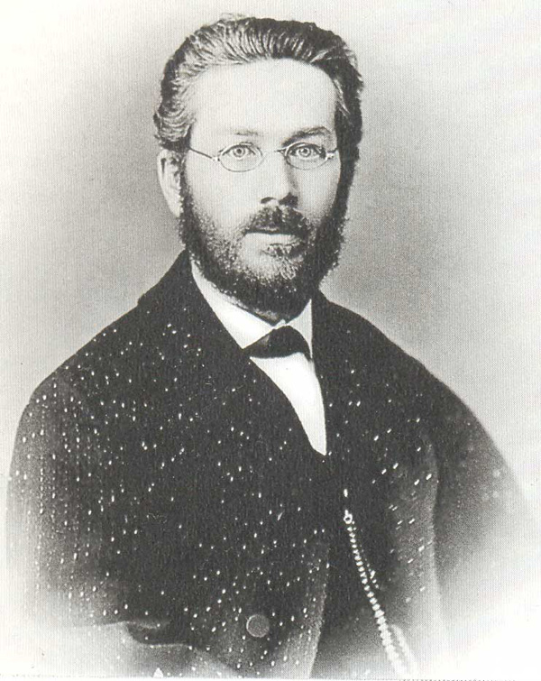
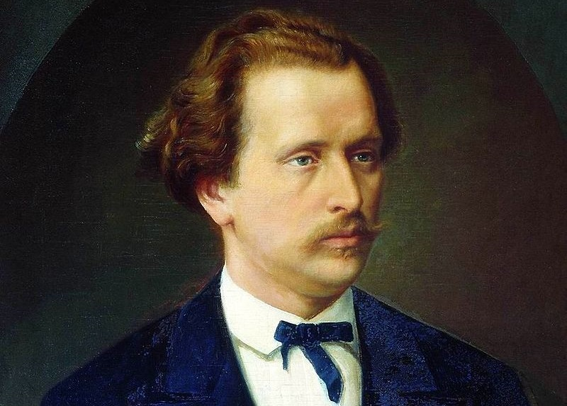
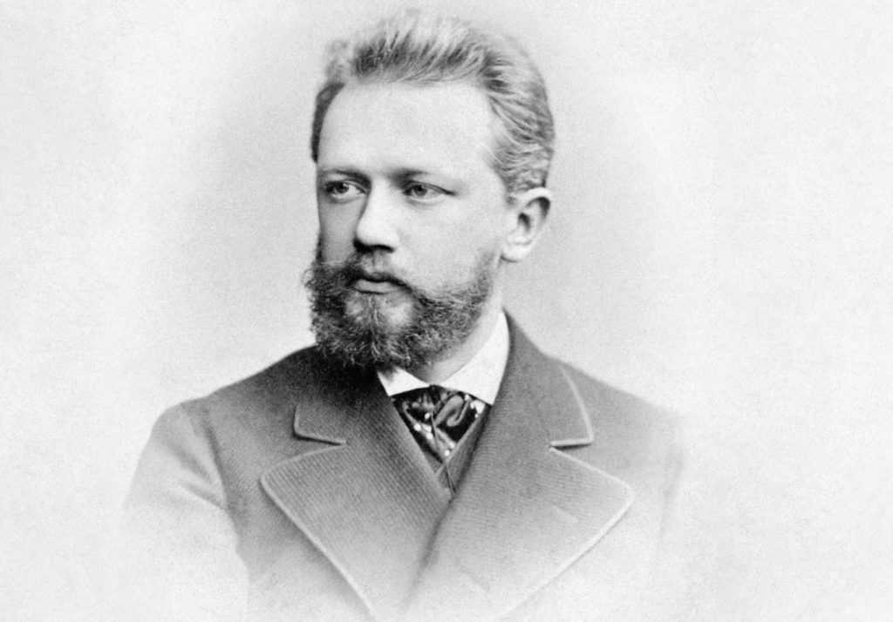
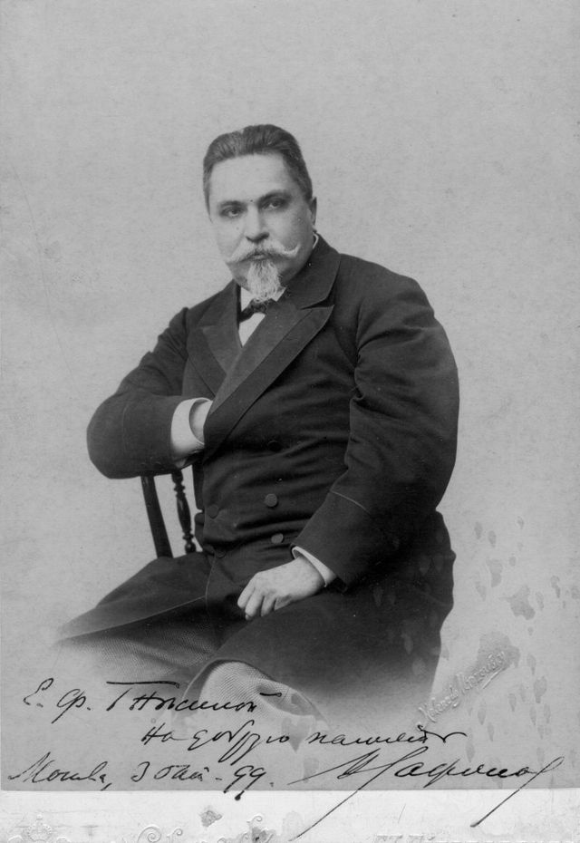

Сергей Иванович Танеев (1856-1915)
(Использованные материалы: С.И.Савенко «Сергей Иванович Танеев», второе издание, Издательство «Музыка», Изд.№12313. Зак. №317 1985г.)Интересы Танеева как человека
Ученик и друг П.П. Чайковского, наследник, продолжатель его дела, соединяет в своем
творчестве романтический лиризм, идущий от Глинки и классическую строгость, усвоенную от
Баха и Моцарта.
Стоит Танеев особняком, он тяготел к старым мастерам, к полифонии, к классическим
жанрам.
Танеев - выдающийся композитор и первый в России крупный ученый- музыковед (писал
шуточные стихотворения).
Стихотворение Хомякова «По прочтению псалма» - является основой его последней
кантаты.
Место рождения Танеева - г. Владимир, 13 ноября 1856 года.
Характер у Сергея Ивановича как у отца – добрый, незлобливый, доброжелательный.
Прослеживается ровность в обращении, одинаковость отношений и жестов в разговоре с
любым собеседником – будь то крестьянин, генерал, ученик или мировая известность. От
родителей унаследовал – выправку, выдержку, изящность, непринужденность манер. Нежное
отношение к ученикам:
Померанцев – Юшенька
Жиляев – Коленька
Метцль – Володенька.
В Москве Танеев жил в Чистом переулке, дом 7.
Занимался музыкой во Владимире у В.И. Возницыной-Полянской. В Москве – у Марии
Александровны Миропольской, ученицы Н.Г. Рубинштейна.
1 сентября 1866 года состоялось торжественное открытие Московской консерватории.
Танеев не расставался с консерваторией без малого 40 лет – был учеником, профессором,
директором и снова профессором.
Первые 4 года он занимался в классе Эдуарда Леопольдовича Лангера, ассистента Н.Г.
Рубинштейна (Лангер - потомственный музыкант. Его прозвали Лангер-Шуман, а его отца:
Лангер- Бетховен). Он преподавал Танееву фортепиано и элементарную теорию музыки и
сольфеджио.

Сергей совмещал занятия в Московской первой классической гимназии с консерваторией
как вольнослушатель. С 1969 года становится действительным учеником консерватории,
получает специальное и общее образование. Занятия укрепили в мальчике природное
стремление к знанию. Особый интерес выказывал Сергей к проблемам философии,
естествознания, социального переустройства, математики, истории.
Л.Н. Толстой говорил о Танееве, что он из тех редких людей, с которыми о чем ни говори,
всё знают.
В консерваторские годы начинают формироваться оригинальные взгляды Танеева на
сущность эмоциональных процессов в русской и европейской музыке, позднее
сформулированные им отчетливо и полно. Он изучал образцы русского культового пения.
Знакомился с прошлым и настоящим русской и зарубежной музыки.
Среди профессоров консерватории одно время находился Г.А.Ларош, котоырй очень сильно повлиял
на Танеева, но не лекциями, а статьями. Ларош стал для Танеева одним из самых близких по
духу музыкантов-мыслителей.
Гармонию Танеев проходил в классе П.И. Чайковского, у него же он позднее проходил курс
инструментовки и свободного сочинения. В это время начинается их профессиональное
общение, перешедшее затем в глубокую и внимательную дружбу.
Несмотря на несходство и творческое, и человеческое их натур, именно Танееву суждено
стать наследником и продолжателем традиции Чайковского, традиции московской
композиторской школы.
В 1871 году Танеев поступает в фортепианный класс Н.Г. Рубинштейна. Наряду с
Чайковским это самый влиятельный педагог его консерваторских лет. Своих учеников
Рубинштейн обучал не только фортепианной игре, он требовал полного понимания
музыкального текста, учил разбираться в форме, в гармоническом языке, в мелодических и
фактурных особенностях. Все особенности исполнения - фразировка, педализация, динамика -
должны выводиться из строго анализа текста.
Четырехлетнее пребывание Танеева в классе Рубинштейна развило его в художественном
отношении. Рубинштейн высоко ценил дарование своего ученика (великолепный слух,
виртуозность, артистический темперамент).
Танеев сделался участником музыкальных собраний в доме Н.Г. Рубинштейна. Туда
приходили Чайковский, Кашкин.

В ученические годы Танеев начинает выступать на концертной эстраде. Его первое
появление на публике состоялось в ноябре 1874 года в доме князя Голицына на Волхонке. Он
исполнял пьесы Шопена и Листа.
За полгода до окончания консерватории, в январском концерте симфонического собрания
РМО Сергей впервые в России исполнял ре-минорный фортепианный концерт Брамса под
управлением Рубинштейна. «Перенявши от своего учителя превосходные приемы
фортепианной виртуозности, Танеев вовсе не копировал своего учителя, а показал себя как
самобытная индивидуальность».
Много ждет от своего ученика Чайковский (как и Рубинштейн) не только в исполнительстве,
но и в композиторском деле. Он сочиняет крупные инструментальные произведения –
увертюры, симфонию, а также романсы, струнный квартет и хоровую музыку. Квартет реминор остался незаконченным.
Диплом Танеева об окончании
Московской консерватории, 1875
Самое крупное произведение Танеева в консерваторские годы – симфония ми- минор,
законченная в 1874 году (посвящена Елене Сергеевне Танеевой, жене старшего брата).
Стилистически симфония примыкает к ранним опусам Чайковского в этом жанре, большую
роль в ней играет народно-песенный материал, что позднее было не свойственно ни
Чайковскому, ни Танееву. Интересно, что народная песня, положенная в основу финала, много
лет спустя зазвучала в масленичных сценах «Петрушки» Стравинского. При жизни Танеева
симфония осталась неисполненной и неизданной и прозвучала только в 1948 году.
Заключение экзаменационной комисси
о выпыскном экзамене Танеева
Одно свое крупное произведение Танееву довелось услышать сразу. Это кантата «Слава» на
стихи Самарина (профессора сценического искусства Московской консерватории) и как
сюрприз Н.Г, Рубинштейну для четырех солистов, смешанного хора и оркестра. На тему р. н. п.
«Слава Богу на небе, слава».
В мае 1875 года С. Танеев окончил курс по двум специальностям: по фортепиано у
Рубинштейна и по композиции у Чайковского. Он первый в истории Московской
консерватории был отмечен высшей наградой – большой золотой медалью. Его имя и сейчас
можно видеть на почетной доске возле малого зала консерватории.
Танеев – пианист.
Летом 1875 года совершил первое заграничное путешествие (Афины и города Италии:
Неаполь, Рим, Флоренция, Генуя, Ницце, а закончил путешествие в Женеве). Цель его была
образовательной: глубоко изучал художественную культуру, изобразительное искусство,
архитектуру.
Второе путешествие за границу Париж – знакомство с картинами Лувра и устройство
сольного концерта. Танеев приходит к мысли о недостаточности своей репертуарной основы, о
необходимости длительной и систематической работы над собой.
Очень сильное впечатление на Танеева произвел И.С. Тургенев, живший тогда в Париже. С
Тургеневым молодой музыкант видится и в салоне Полины Виардо.
Музыкальные знакомства Танеева не ограничиваются семьей Виардо. В этот период он
завязывает дружеские отношения с лучшими французскими композиторами того времени –
К.Сен-Сансом, С.Франком, А.Дюпарком, Венсан Д-Энди.
Июнь 1877 года С.Танеев по пути в Россию. Он размышляет… «Когда я поеду в следующий
раз за границу, я хочу тогда быть:
- пианистом;
- композитором;
- образованным человеком.
В эти годы Танеев был занят творческими и общественными делами.
В зрелые годы он постепенно сосредотачивается на ансамблевой деятельности и камерных
сочинениях, в основном собственных. Чужую музыку он перестал играть, лишь делая
исключение для произведений П.И. Чайковского, А.С.Аренского и Н.Г.Рубинштейна.
Танеевские выступления были для Москвы праздником.
Как пианист Танеев многое унаследовал от своего учителя Н.Г. Рубинштейна.
Монументальность, оркестровый размах, богатство эмоциональных оттенков и властность,
захватывающая убедительность интерпретации, сблизила игру Танеева с романтическим стилем
фортепианного исполнительства, который вслед за Ф.Листом развивали Николай и Антон
Рубинштейны.
В целом ярко темпераментный танеевский стиль был не романтическим, а классически
ярким и уравновешенным.
«Это был убежденный, активный мыслитель» – говорил Б.Л. Яворский.
Пробовал себя Танеев и в другой сфере музыкального исполнительства – дирижировании.
В 1875 году начинается интенсивная концертная жизнь. Гастролирует в Москве, городах
российских. Сезон 1877-1878 года посвящен в основном концертной деятельности, посещает
Прибалтику. Сохранились программы этих концертов, составленные из произведений Баха,
Бетховена, Шопена, Шумана и Листа, также Чайковского.
Для Танеева главное - представление о сцеплении событий и фактов, причинноследственной зависимости и взаимосвязи. Широкий кругозор, отличавший композитора в
зрелые годы, был результатом не просто накопления знаний, но и систематичности в их
накоплении.
Танееву важно осознанное, осознанное отношение к сочинению музыки.
Танеев далеко уходит от своего времени, предвосхищая многое в 20 веке.
Возвратившись из Парижа, Сергей Иванович без задержки следует в Селище, имение своих
близких друзей Масловых. Жизнь в Селище протекала согласно давнему распорядку,
позволявшему хозяевам и гостям много общаться, отдавая должное и серьезным занятиям.
Щедры были на проказы и хозяева Селища. В этой атмосфере, еще в 1876 году, возник
рукописный журнал «Захолустье» Танеев выступал в журнале как автор шуточных стихов, на
которые он был большой мастер. В качестве приложения к журналу «Захолустье» давались
музыкальные произведения Танеева – романсы, вокальные ансамбли, хоры. Таких
произведений набралось около полусотни, лишь несколько из них Танеев впоследствии
опубликовал в новой редакции.
Романс оставался для Танеева на протяжении жизни очень важным жанром: здесь находила
выход склонность к лирическим импровизациям, сближающая его с учителем -
П.И.Чайковским.
Танеевские шутки хорошо знали его постоянные собеседники. Его чувство юмора
распространялось и на него самого. «Он не раз подшучивал и над самим собой», - вспоминал
С. В. Рахманинов.
Профессор консерватории. Танеев и Чайковский.
Осенью 1878 года Танеев начинает педагогическую деятельность в стенах Московской
консерватории. Он становиться преемником П.И. Чайковского - берет на себя классы гармонии
и инструментовки. Чайковский последние годы тяготился своими профессиональными
обязанностями, но именно благодаря его урокам уровень теоретических знаний даже у
исполнителей был очень высок. Сергей Иванович активно и ответственно взялся за дело.
Тщательность и добросовестность в выполнении задачи рождали чувство глубокого
удовлетворения и даже эстетического удовольствия.
Танеев писал Аренскому: «Печально то положение, при котором человек обращается в
какого-то автомата, механически проделывающего сегодня то, что он делал вчера, и
перестающего в своих занятиях умственно работать».
Через три года Танеев наследует класс и другого своего учителя - Н.Г. Рубинштейна,
внезапно скончавшегося в Париже 11 марта 1881 года.
Профессором специального фортепиано он будет 7 лет, после чего сосредоточит свои силы
на наиболее близких ему дисциплинах - контрапункте и введенном им осенью 1897 года
специальном курсе музыкальных форм. Не прекратит он педагогической деятельности и после
ухода из консерватории, в последнее десятилетие своей жизни.
Воистину преподавание было для Танеева «источником самых чистых наслаждений», а сам
он стал со временем одним из крупнейших авторитетов в этой области, по словам
А.К.Глазунова - «мировым учителем».
С самого начала работа Танеева не ограничивается узкими академическими рамками. Так,
весной 1879 года он принимает деятельное участие в подготовке вошедшей в историю
консерваторской премьеры - оперы «Евгений Онегин» Чайковского.
Музыка Чайковского была для Танеева источником того же «жгучего наслаждения», острого
и почти мучительного чувства красоты, о котором он говорил по поводу игры Антона
Рубинштейна.

Восхищение творчеством Чайковского, преклонение перед его музыкой и личностью
сопутствовало Танееву всю жизнь. Со стороны может показаться странным: уж очень не
похожи учитель и ученик. Чайковский сочинял быстро и стремительно, в порыве вдохновения,
один из самых тонких и проникновенных лириков в истории искусства, для которого сочинение
музыки есть глубочайшая потребность души. И Танеев уравновешенный, спокойный оптимист,
твердо знающий, чего он хочет добиться в жизни и в искусстве, работающий по заранее
продуманному плану.
«Будущего твоего биографа будет необыкновенно приятно поражать всегдашнее отражение
бодрого, здорового, оптимистического отношения к задачам жизни. Ты не только художник, но
и мудрец», - констатирует Чайковский в 1891 году.
Не зря говорят, что противоположности сходятся. Непременно только должна
присутствовать общая почва, основа, на которой возводится здание человеческих отношений.
У них была основа: глубочайшая духовная активность в творческих вопросах, неподдельная, не
показная заинтересованность работой друг друга, человеческое тепло и нежность. Обычно
молчаливый Танеев преображался. Делался особенно оживленным и остроумным.
Бесценная свидетельство этой дружбы великих людей - их переписка, интенсивная и
подробная. Чайковский считал необходимым высказать Танееву свой взгляд на сущность
творчества, на задачи искусства.
В вопросах композиторского мастерства, технического выполнения чутко прислушивались
друг к другу.
 В июне 1880 года было чествование великого поэта А.С. Пушкина. К этому событию Танеев
написал кантату «Памятник» (на первые 8 строф пушкинского стихотворения).
Задача каждого русского музыканта заключается в том, чтобы способствовать созданию
национальной музыки.
Танеев видит великое преимущество русской музыки в ее молодости. Русская музыка - иной
природы, чем европейская. Русская музыка уже открыла свой путь, достаточно отличный от
европейского, что в творчестве высоко ценимых им Глинки и Чайковского уже найдены
органичные формы выражения русского национального начала (Танеев это не всегда замечает).
Танеев стремился к выявлению - и художественному, и теоретическому– фундаментальных
основ музыкального искусства. Он не во всем соглашался с «петербургскими музыкантами» -
композиторами балакиревского кружка. Он увидел «великое и грандиозное» в созданиях
Моцарта и Баха, и конечно Чайковского (восхищение Моцартом у Чайковского и Танеева
имело разную природу и разные формы проявления. Танеев желал учиться у Моцарта,
заимствуя его приемы и язык).
В июне 1880 года было чествование великого поэта А.С. Пушкина. К этому событию Танеев
написал кантату «Памятник» (на первые 8 строф пушкинского стихотворения).
Задача каждого русского музыканта заключается в том, чтобы способствовать созданию
национальной музыки.
Танеев видит великое преимущество русской музыки в ее молодости. Русская музыка - иной
природы, чем европейская. Русская музыка уже открыла свой путь, достаточно отличный от
европейского, что в творчестве высоко ценимых им Глинки и Чайковского уже найдены
органичные формы выражения русского национального начала (Танеев это не всегда замечает).
Танеев стремился к выявлению - и художественному, и теоретическому– фундаментальных
основ музыкального искусства. Он не во всем соглашался с «петербургскими музыкантами» -
композиторами балакиревского кружка. Он увидел «великое и грандиозное» в созданиях
Моцарта и Баха, и конечно Чайковского (восхищение Моцартом у Чайковского и Танеева
имело разную природу и разные формы проявления. Танеев желал учиться у Моцарта,
заимствуя его приемы и язык).
По окончании консерватории Танеев начал изучать двойной контрапункт (это такое
сочетание голосов, которое позволяет им менять высотное положение; например, верхний
сделать нижним, а нижний - верхним. Сочинение двойных контрапунктов требует соблюдение
особых правил: Мелодия каждого голоса не может заключать в себе хода на хроматический
полутон, увеличенных и уменьшенных интервалов обеих септим и большой сексты. В нем
допускаются на сильных временах диссонирующие аккорды; движение мелодии гораздо
свободнее, в ней только запрещены ходы на увеличенные интервалы и септимы).
Твердый голос - это основная мелодия полифонической композиции.
11 марта1884 года в экстренном собрании, посвященном памяти Н.Г.Рубинштейна, впервые
прозвучала кантата «Иоанн Дамаскин». Основой кантаты послужила часть из поэмы
А.К.Толстого, с вдохновенной свободой рисующей образ Иоанна Дамаскина, поэтагимнографа 7-8 веков. Отрывок, избранный Танеевым, представляет собой вольное,
незаконченное переложение заупокойной стихиры, произносимой как бы от лица ушедшего,
исполненной любви и сострадания:
Иду в неведомый мне путь,
Иду меж страха и надежды,
Мой взор угас, остыла грудь,
Не внемлет слух, сомкнуты вежды;
Лежу безгласен, недвижим,
Не слышу братского рыданья,
И от кадила синий дым, на мне струит благоуханье;
Но вечным сном пока я сплю. Моя любовь не умирает,
Моя любовь не умирает,
И ею, братья, вас молю –
Да каждый к Господу взывает;
Господь! В этот день, когда труба,
Вострубит мира представленье,
Прими усопшего раба
В твои небесные селенья.
Этот текст Танеев располагает в трех частях, тонко обозначая смысловые переходы,
существующие внутри отрывка. Начальное восьмистишие становится основой первой части,
пленяющей необычным сочетанием непосредственной теплоты и задушевности с возвышенной
строгостью в выражении скорбного чувства.
«Моя любовь не умирает» - это вторая часть, островок надежды и света, как бы вступление к
величественному финалу, с суровой неумолимостью утверждающему основную мысль -
«категорический императив» сочинения.

Иоанн Дамаскин, страница партитуры, автограф
Чисто религиозное настроение в кантате отсутствует. Танеева интересует общий смысл,
общее настроение стихов, он вовсе не стремиться иллюстрировать отдельные образы и
поэтические детали.
Избранная тема важна для него общечеловеческим содержанием: здесь Танеев продолжатель
и наследник великих мастеров прошлого. Особенно явственно влияние баховских духовных
кантат.
Внутренне образное развитие от субъективной остроты скорбного настроения к внеличной
объективности, все вбирающей и примеряющей, напоминает баховское движение к сольной
арии, к хоралу, от индивидуального к общинному, коллективному.
Кантата «Иоанн Дамаскин» посвящена памяти Николая Григорьевича Рубинштейна, памяти
учителя и друга. Поминальный замысел определил не только выбор поэтического текста, но и
важнейшие музыкальные особенности сочинения.
Важную роль в кантате играет известный церковный напев «Со святыми упокой». Его
Танеев использовал в оркестровой интродукции и в первой и последней части, не нарушая их
целостность и самостоятельность, но сообщая им свой суровый, похоронный колорит.
Мелодии православного Обихода Танеев считал таким же необходимым материалом для
русского композитора, как и народные песни, справедливо подчеркивая родственность тех и
других. Сам он много занимался обработками и переложением старинных напевов, пытаясь
применить к ним те же формы полифонии, что и в народных песнях.
Так в «Дамаскине» Танеев отрекается от схемы. Первое оркестровое изложение напева «Со
святыми упокой» (кстати, с подлинным текстом он в кантате нигде не звучит) с прекрасной
гармонизацией, подчеркивающий ладовый колорит русской темы. Дальше напев появляется
подобно лейтмотиву и в полифонической фактуре сохраняет свой первоначальный характер.
Полифоническое письмо в кантате - на первом плане. Оно господствует в первой части, где
есть и гомофонная, и аккордовая фактура. В финале же Танеев создает мощную фугу, близкую
баховским и генделевским образцам. Композитору в кантате удалось соединить
непосредственность лирических интонаций, напевность романса с обобщенностью строгих
контрапунктических форм. Танеев вырос на целую голову (С.Н. Кругликов)
По сей день это одно из самых популярных произведений Танеева. В «Иоанне Дамаскине»
совершенная техника молодого композитора соединилась с высоким поэтическим
вдохновением и подлинной лирической теплотой, русский интонационный материал нашел
свою форму выражения.
В кантате Танеев использовал различные хитросплетения контрапункта.
В русской музыке это один из первых образцов светской философской кантаты, развившейся
позднее в самостоятельную жанровую ветвь. «Колокола» Рахманинова, «Звездоликий»
Стравинского, «Семеро их» Прокофьева, «По прочтении псалма» самого Танеева.
Вряд ли вне танеевского воздействия, тема «Со святыми упокой» появилась десятью годами
спустя, в гениальной шестой симфонии Чайковского – тоже как символ смерти, жестокой силы,
безжалостно разрушающие надежды человека на счастье. Цитата, естественно, звучит у
Чайковского по-иному, но сама драматургия симфонии, может напоминать об «Иоанне
Дамаскине», где чисто театральные контрасты и переключения играют немалую роль.
Следующему крупному произведению Танеева была уготована совсем другая судьба.
Симфония ре минор, законченная летом 1884 года, лишь однажды прозвучала при жизни
автора. Но по-другому ее восприняли в 1916 году, когда новое исполнение положило начало
новой концертной жизни произведения.
Так не раз случалось с танеевскими сочинениями. При первом своем появлении они могли
казаться консервативно-академическими, излишне традиционными, позднее же, когда многие
современные им новинки уходили в прошлое, вдруг открывалась не утраченная свежесть и
художественная значимость произведений Танеева.
Директор консерватории
После смерти Рубинштейна, достойной замены ему не видели, и на первых порах
консерваторией начал управлять директориальный комитет из пяти членов, в который вошли
Танеев и Кашкин.
«Я решил добиться назначения на эту должность Танеева, человека безупречной
нравственной чистоты и превосходного музыканта, хотя слишком молодого. В нем я вижу
якорь спасения консерватории, если план мой удастся. Она может рассчитывать на дальнейшее
успешное существование» (Чайковский – Н.Ф. фон Мекк).
Прежде всего, надо было преодолеть сопротивление самого Танеева. Он к этому времени
вполне почувствовал себя композитором, стремился сосредоточиться на творческой работе, в
его голове рождались замыслы новых сочинений, он лелеял мысль об опере. Всему этому
директорство могло стать серьезной помехой.
30 мая 1885 года двадцативосьмилетний Танеев был избран директором Московской
консерватории.
Четырехлетнее пребывание Танеева на посту директора принесло консерватории огромную
пользу. К этому времени Танеев после Рубинштейна и Чайковского был самой авторитетной
фигурой музыкальной Москвы. И не только как композитор и пианист, но и как человек
нравственных качеств, безупречной репутации.
«Избрание Сергея Ивановича директоры сразу внесло успокоение, ибо одна из партий
совершенно умолкла, а учащиеся отнеслись к новому директору с полным доверием, так как его
ум, благородство характера и редкая душевная доброта были уже всем известны»
(Н.Д.Кашкин).
Танеев за короткий срок поправил материальное положение, финансовую базу
консерватории.
Основным в директорской жизни Танеева были творческие проблемы. Он выступил как
наследник и продолжатель дела Рубинштейна, но не ограничивался тем, что возвратил
консерватории ее прежний блеск.
1.Танеев усовершенствовал учебные планы, взяв на себя руководство теоретическими
предметами, в том числе любимым контрапунктом.
2.Исключительное внимание уделял оркестровому и хоровому классам. Для учащихся
духовиков были выделены дополнительные стипендии, что позволило организовать
полноценный оркестр. Руководство обоими классами Танеев принял на себя. Они исполняли
произведения Палестрины, Баха, Гайдна, Моцарта, Генделя, Бетховена.
3.В период танеевского директорства силами учащихся консерватории были поставлены
оперы Моцарта «Cвадьба Фигаро», «Дон-Жуан», оратория Генделя «Самсон» и «Израиль в
Египте». Эти постановки достойно продолжали традиции спектаклей «Фиделио» Бетховена,
«Волшебная флейта» Моцарта, «Евгений Онегин» Чайковского, осуществленные в
рубинштейновские времена.
Выбор сочинений для консерваторских постановок не просто отражал личный вкус Танеева:
он понимал, что именно классика должна быть подлинным фундаментом в становлении
молодого артиста.
Все сочинения, поставленные под руководством Танеева, тщательно им изучались. И не
только нотный текст. Танеев стремился узнать о нем и его авторе как можно больше, для чего
исследовал научные труды на данную тему. Затем шла усиленная работа с исполнителями,
отделка ансамблевых деталей, где любая подробность была оправдана стилистически.
Аналогичным путем шел Танеев и в своей пианистической деятельности.
Ученические исполнения вновь, как во времена Рубинштейна, стали в Москве крупным
культурными событиями. В начале 90-х годов консерваторские концерты проходят регулярно,
и оркестр превращается в постоянный артистический коллектив, гастролирующий по России.
Летом 1885 года он едет на Кавказ (Ессентуки и Кисловодск).
В середине лета он отправляется в научную экспедицию в Сванетию. Цель экспедиции -
изучение быта и культуры кавказских народов, почти неизвестных в то время в России и
Европе. Там Танеев записывает множество напевов кавказских горцев. В результате поездки
появляется статья «О музыке горских татар».
Танеев на протяжении многих лет изучал фольклорную музыку, многие произведения из
которых позднее были обработаны в полифонической манере.
Изучает ритмику русских былин.
Сам Танеев не воспользовался записанными им горскими мелодиями. Его композиторские
интересы лежали в другой области, но некоторые из них (горских) зазвучали в опере ученика
Танеева - Александрова «Бэла», написанной на лермонтовский сюжет.
Директорские и профессорские обязанности поглощали почти все время Танеева и на
собственные творческие замыслы, оставалось только лето.
Танеев был директором Консерватории 3 года. В мае 1889 года Танеев уходит с поста
директора, сохранив за собой только класс контрапункта (контрапункт – нота против ноты – в
музыке одновременное сочетание двух или более самостоятельных голосов).
Ему обязаны фортепианные классы своим теперешним превосходным состоянием.
Ученический оркестр в течение трех лет под его управлением улучшился до неузнаваемости
как в количественном, так и в качественном отношении.

После исполнения Орестеи, 1915
«Чувствую себя бесконечно счастливым. Тишина, спокойствие, возможность делать, что
хочешь, занятия контрапунктом, открывающие мне новые горизонты, - лучше трудно себе
представить» (Танеев– Чайковскому).
Как композитор Танеев во второй половине 80-годов развивался не очень интенсивно.
Главное для Танеева в эти годы была опера «Орестея». Хлопотать о постановке оперы начал
Чайковский, рекомендовавший оперу Всеволожскому, директору императорских театров и
главному дирижеру Мариинского театра Направнику. Премьера состоялась 17 октября 1895
года.
Премьера оперы «Орестея» сблизила Танеева с петербургскими композиторами.
Устанавливаются и отношения с Беляевым, который вошел в историю музыки как основатель
Русских симфонических концертов и нотоиздательства. С 1896 года он начинает издавать
сочинения Танеева. Дружеские отношения отныне связывают Танеева с Римским-Корсаковым и
особенно с Глазуновым.
Между Глазуновым и Танеевым было немало общего, но так было не всегда. В 70-80 годы
творчество петербуржцев вызывает у Танеева резкое критическое отношение. Русский стиль,
выработанный «Могучей кучкой», Танеев считает не органичным, ибо он не отвечает его
представлениям об истинном пути национальной музыки. Со временем отношение Танеева
начинает меняться. Устанавливается контакт с Бородиным, новые сочинения Римского-
Корсакова вызывают у Танеева восхищение. Самую высокую оценку он дает опере «Кощей
бессмертный».

Круг идей, занимающий Танеева и его петербургских коллег, делается общим. На смену
революционному балакиревсому кружку приходит прогрессивный беляевский.
Широта и непредвзятость танеевских взглядов выделяют его среди современников.
Приверженность классическому художественному идеалу не препятствовало, а напротив,
как будто помогало Танееву видеть ценное в самых далеких от него явлениях, в особенности
это сказалось в его педагогической деятельности.
Однако Танеев, точно оценив многие современные ему тенденции, не сумел принять
позднего Скрябина, Дебюсси, Р. Штрауса.
"Орестея" была не единственным оперным замыслом композитора. В разное время он
задумывал оперы «Овечий источник» по Лопе де Вега, «Геро и Леандр» по античному мифу,
«Портрет» по Гоголю. Все они остались не осуществленными.
Танеев был способен и к импровизации. Это заметно в сочинениях малых форм, в
особенности романсов. Во время работы над произведениями рождало у Танеева ощущение
творческого подъема и истинного вдохновения. «Я могу находить такие звуки, которые в
людских сердцах пробудят то, чего я сознаю себя лишенным», - говорил Танеев.
Как перекликаются эти слова с призывом Чайковского, обращенному к младшему коллеге
почти 40 лет назад: «Цель искусства не только услаждать слуховые органы, но и душу и
сердце». Своим собственным путем пришел Танеев к сердечности, к духовности и душевной
наполненности музыки.
В начале июня 1895 года он приезжает в Ясную Поляну, как и лето 1896 года, там он много
занимается за фортепиано, проверяет работы своего ученика Померанцева, в обществе Татьяны
Львовны Толстой изучает итальянский язык, его цель прочитать в оригинале либретто
моцартовского «Дон-Жуана», а также изучает эсперанто. Танеев много и разнообразно
общается с хозяевами, по их просьбе играл Бетховена, Моцарта или Шопена.
Стремление к внешней сдержанности проистекало и от его характерного душевного
целомудрия, не позволявшего ему раскрыть свой внутренний мир.
Симфония ДО МИНОР №4. Камерно-инструментальная музыка ТАНЕЕВА
В сентябре 1897 года Софья Андреевна Толстая записывает в дневнике: «Сергей Иванович
сыграл мне свою прекрасную симфонию и очень меня ею взволновал: прекрасное произведение
и благородного высокого стиля музыка его».
Симфония завершена в 1898, премьера состоялась в марте под управлением А. Глазунова,
которому симфония и посвящена. Московское исполнение состоялось зимой 1902 года,
дирижировал Зилоти, вызвало благоприятные отзывы.
«Во всей отечественной симфонической литературе я не знаю АДАЖИО более
глубокомысленного, более овеянного духом Бетховена, чем АДАЖИО симфонии Танеева».
Симфония до минор - одна из вершин танеевского творчества. Она продолжает развивать
концепцию «Орестеи», утверждая путь от хаоса и мрака к ясности и разуму. Жанр предполагает
создание целостного образа человеческого бытия; поэтому симфония всегда бывает
музыкально-филосовским осмыслением жизни.
Единство, целостность в сочетании с расчлененностью– важнейшие принципы
композиторского мышления Танеева.
Позднее Танеев не написал ни одной симфонии, хотя замыслы у него были. Он уходит в
область камерно-инструментальной музыки, которая отныне становится главной областью для
композитора.
Танеев пишет квартеты, которые исполняет Чешский квартет. Это великолепный коллектив
и раньше проявлял интерес к танеевским сочинениям, отныне, стал его горячим
пропагандистом. Он посвятил им свой 4-й квартет. Невольно сравнивая игру чешских и
московских коллег, Танеев грустно заметил, что по-настоящему хорошо играть могут только
свободные люди, не дающие целый день уроков. По поводу второго квартета, исполненного
чехами, пишут: «Исполнение было верхом совершенства». «Квартетный концерт был
удивительно хорош. Что за прелесть квартет. Это последнее слово новой музыки».
В 1908 году Танеев предпринимает поездку за границу. Вместе с Чешским квартетом он дает
концерты в Берлине, Вене, Праге, программа которых состояла исключительно из
его камерных произведений.
На склоне лет Танееву суждено было дожить до настоящего успеха своей музыки. Более
всего он обязан этим успехом своим камерным сочинениям и хорам.
В своем подходе к камерной музыке Танеев опирался на традиции венских классиков. В
танеевском камерном стиле непосредственное воздействие Моцарта ощущается эпизодически.
Тип моцартовского квартетного письма - мелодическая живость голосов и полифоническая
активность ткани - развивался Танеевым очень плодотворно.
В интонационном строе камерных ансамблей Танеева примет русского фольклора нет.
Сходство здесь в типе мелодии и не связано с заимствованием. Мелодическая насыщенность
его фактуры, строгая соподчиненность его элементов рождают «ясность расположения планов
при пространственной перспективе» - свойство, так восхищавшего Танеева и в искусстве
итальянского Ренессанса. Важно здесь и тонкое претворение старинных жанров барокко:
инструментальной арии и пассакалии (принцип пассакалии, то есть вариации на неизменную
басовую тему, положен в основу LARGO фортепианного квинтета) с их «бесконечным»
мелодическим развертыванием при единстве образно-эмоционального состояния.
Другой важный источник мелодики - романтические интонации, «интонации эпохи»,
восходящие в первую очередь к Чайковскому.
Адажио в камерных ансамблях Танеева - вершина лирического самовыражения. Здесь он в
наибольшей степени нов и своеобразен, здесь формируется особый тип медитации -
сосредоточенного размышления, созерцания, проникнутого в то же время эмоциональной
активностью, здесь в наибольшей степени ощущается воздействия традиций позднего
Бетховена, его философского лиризма и самоуглубленности.
Вершинные сочинения Танеева в жанре камерного ансамбля - Шестой квартет и
фортепианный квинтет - отмечены особой монументальностью. Танеев идет по пути
симфонизации камерной музыки.
В творчестве Танеева единство и многообразие означало упорядоченность, господство
разума над стихией. Музыка - это преображенная жизнь материи, устремленная к стройности.
Адажио (шестого квартета) этого цикла по глубине переживания, значительности
выразившегося в нем духовного мира художника, сочетанию искренней лирической исповеди
сосредоточенного философского размышления, естественности течения музыкальной мысли,
своеобразной, свободной и в то же время спаянной форме по праву может быть поставлено в
один ряд с выдающимися страницами мировой камерной музыки» (Л. Корабельникова).
Фортепианный квинтет (1911 год). О квинтете вполне можно было бы сказать
роллановскими словами, произнесенными по поводу Аппассионаты Бетховена: «огненный
поток в гранитном русле».
Пламенность и страстность музыки Танеева естественно живет в строгих рамках
классических форм, которые приобретают отчетливый романтический отпечаток.
Крайние части четырех частного цикла дышат особенной силой и энергией. Скерцо -
стремительное, поразило слушателей звуковой изобретательностью и феерической прелестью
колорита.
«Это чистый романтик с громадным темпераментом», - заметил Н.Я. Мясковский.
Танеевские традиции камерного инструментализма получили дальнейшее развитие в
отечественной музыке. Еще при жизни композитора его ансамбли воздействовали на стиль
А.К. Глазунова, вне Танеева не возможно представление о квартетах Н.Я. Мясковского и в
особенности о камерной музыке Д. Шостаковича.
«В произведениях Танеева русская камерная инструментальная музыка окончательно
перешла из стадий отдельных художественных, более или менее удачных произведений, а
также из области ансамблей, рожденных салонным музицированием, в сферу высшего
музыкального сознания» (Б. В. Асафьев).
Мировой учитель

«Вследствие совершенно неблагопристойного поведения директора Московской
консерватории Сафонова, я выхожу из состава профессоров этой консерватории» (С.Танеев).
Сафонов много сделал для консерватории - гастроли с ученическим оркестром по городам
России и перестройку здания консерватории, которое при нем приобрел свой нынешний вид.
Воспитанный в военной среде, он был властен и деспотичен. Танеев с обостренным чувством
справедливости, педантически последовательный в соблюдении нравственных принципов,
убежденный в том, что «право есть то, что дозволено законом», должен был встать новому
директору поперек дороги. Танеев протестовал не только против Сафонова, но и против духа
подобострастия и лакейства, который мало-помалу проникал в среду профессоров.
Через два года произошел серьезный инцидент, в центре которого встал Г. Э. Конюс,
композитор и теоретик, преподававший в консерватории инструментовку. Сафонов решил
слить группы специальной и общей инструментовки в одну, причем количество учеников
должно возрасти до сорока. Конюс стал протестовать против намерения директора. Танеев
решительно его поддерживает. Для того чтобы аргументировать свою позицию, он обратился к
консерваторским документам, а также нашел справки у Римского- Корсакова, который много
лет вел инструментовку в Петербургской консерватории. Это было в правилах Сергея
Ивановича опираться на факты, а не на эмоции. Вступиться за нарушаемый закон он считал
своим долгом.
Однако мнение Танеева, как и большинства членов Художественного совета консерватории,
во внимание не было принято. Сафонов единолично решил вопрос и Г.Э. Конюс был уволен из
консерватории. Танеев же после этого случая встал в открытую оппозицию к директору.
Особенно резкий протест его вызывает единоличное господство Сафонова в консерватории и
в Московском отделении РМО, который и там и здесь занимает директорский пост.
В марте 1905 года Танеев пишет открытое письмо в газету «Русские ведомости». Отдельные
его предложения, например, разделение консерватории на низшее музыкальное училище и
высшее, консерваторию в собственном смысле слова, - были осуществлены уже в советское
время. В тот же день, когда было напечатано письмо, учащиеся консерватории объявили
забастовку в знак полного сочувствия освободительному движению, охватившего в настоящее
время лучшую часть русского общества.
Сафонов сказал Танееву: «Порядочный человек должен уйти из консерватории, если ему не
нравятся его порядки, а оставаясь, не критиковать их».
Танеев хотел точного соблюдения устава во всех деталях и мелочах - это не пустая
формальность. Вне этого он считал административную должность невозможной.
Уходя из консерватории, Танеев в знак протеста отказался от полагавшейся ему пенсии, хотя
таким образом он лишал себя средств к существованию. Служба в консерватории да
эпизодические гонорары за издания сочинений были единственными для Сергея Ивановича
источниками доходов.
Уход Танеева совпал с увольнением Римского-Корсакова, вместе с другими профессорами
осудившего реакционные порядки Петербургской консерватории. Сочувствие Танееву
выразили очень многие крупнейшие деятели музыкального искусства, его буквально засыпали
приветственными обращениями, телеграммами, письмами. Московский Художественный совет
просил Танеева вернуться в консерваторию и сколько его не просили впоследствии, он не
вернулся. Отчасти он хотел посвятить себя всецело творческой и научной работе, а в
значительной степени и потому, что он был оскорблен равнодушным отношением к себе
товарищей, во время грубой выходки Сафонова и работать вместе с ними охоты не имел. Его
пригласили вернуться 249 учеников. Для них Танеев был «светлым лучом в темном царстве»,
который вместе с Н.Г. Рубинштейном и П.И. Чайковским содействовал созданию
консерватории.
В консерваторию Танеев не вернулся.
В марте 1906 года Танеев становится преподавателем только что основанной Народной
консерватории. Это было общедоступное просветительское учреждение, стремящиеся дать
самым широким кругам учащихся необходимые знания о музыке, развить в них понимание
искусства, познакомить с его историей. Наиболее способные и прилежные могли обучаться
игре на инструменте, сольному пению и композиции, но преобладающей формой общения с
музыкой было участие в хоровом классе.
В Народной консерватории преподавали многие ученики и недавние коллеги Танеева:
Е.В. Богословский, А.Б. Гольденвейзер, Н.Д. Кашкин, Ю.Д. Энгель, Б.Л. Яворский.
Народная консерватория была предшественником тех многообразных очагов
просветительства, которые возникли после Великой Октябрьской революции.
Участие в подобном учреждении отвечало его демократическим воззрениям, разработанным
еще в молодости.
Показательна позиция Танеева в 1905 году. 11 января, после событий на Дворцовой
площади, он подписал адрес от музыкантов с требованием свободы совести и слова.
Оставив консерваторию, Танеев не прекратил преподавательской деятельности. И не
изменил своему твердому принципу не брать деньги за уроки. Всю свою жизнь он держал
только бесплатных учеников, нарушив это правило лишь однажды, осенью 1905 года. Тогда он
согласился на получение денег - с тем, чтобы средства шли на поддержку семейств бастующих
рабочих.
Танеев был прирожденным педагогом, прежде всего потому, что собственный творческий
метод. Выработал совершенно сознательно и мог научить других тому, чему научился сам.
Противопоставляя педагогические принципы школ Римского- Корсакова и Танеева,
Б.В.Асафьев писал: «Базой Римского-Корсакова–педагога все время продолжает оставаться
личный композиторский опыт, а базой Танеева - все большее и большее обоснование своей
работы универсальными принципами мастерства. Ученики Танеева, каждый, получая технику,
остаются сами собою. Ученики Римского- Корсакова воспринимают его манеру сочинения, в
большинстве случаев пишут под Корсакова. Метод Танеева становиться диалектически –
живым, внеличным, независимым от консервативных вкусов его создателя».
В консерватории Танеев вел в разное время фактически весь цикл предметов, относящихся к
музыкальной теории: контрапункт, канон и фугу, гармонию, инструментовку и несколько лет
свободного сочинения, но основным своим предметом Танеев считал контрапункт строго
стиля:
 «Занимаясь долгое время контрапунктом, я выработал некоторые взгляды на этот
предмет, которые во многом разняться от общепринятых».
Однако, до того как ученик попадал в танеевский класс контрапункта (попасть к нему было
не легко и считалось честью), он должен был отлично сдать гармонию.
«Занимаясь долгое время контрапунктом, я выработал некоторые взгляды на этот
предмет, которые во многом разняться от общепринятых».
Однако, до того как ученик попадал в танеевский класс контрапункта (попасть к нему было
не легко и считалось честью), он должен был отлично сдать гармонию.
Преподавание Танеев
подчинил центральной для него идее исторической преемственности в эволюции музыки. У
него на смену строгому стилю пришел свободный контрапункт, в ученических работах
сменялся фугами.
Свободное сочинение Танеев преподавал не долго, в начале своей консерваторской
деятельности. Но все композиторы, прошедшие с ним теорию, могут по праву считаться его
учениками. Все теоретические предметы по мысли Танеева, для композитора - специальные.
Ибо основной упор он делал на развитие навыков самостоятельного сочинения.
Танеев много внимания уделял художественной направленности.
Метод преподавания Сергея Ивановича был совсем не таков, каким учили его самого.
Он считал: «то, что не приемлемо в одном стиле, вполне приемлемо в другом. И соблюдение
тех или иных правил есть не соблюдение правил музыки вообще, а только практическое
изучение музыки, того или иного стиля» (Ю.Д. Энгель).
В Танееве было редкое сочетание творческого дара и глубочайшей осмысленности, что и
делало его замечание особенно авторитетными. Поправляя с необычной быстротой
ученические задачи, он умел в случае затруднения тут же предложить лучший вариант - либо
на ходу импровизировав пример, либо сыграл что-либо из классиков - Палестрины, Баха,
Моцарта. Постоянное, конкретное сравнение с этими примерами очень развивало технику
учеников. Ведь перед ними был живой пример - учитель, с головокружительной свободой
владения тайнами мастерства.
Все ученики Танеева в один голос вспоминают прекрасную атмосферу творческого труда и
подлинной заинтересованности, царившей на его занятиях. Он был очень требовательным и
хвалил очень редко, зато в случае удачи он явно радовался. «Вот теперь ты написал как
настоящий композитор». Для этого нужно иметь сердце Сергея Ивановича, не знавшее ни
зависти, ни тени недоброжелательства к людям.
Твердые принципы преподавания и ясное представление о художественном идеале не
приводили к педагогическому давлению и деспотизму. Танеев очень любил отвечать на
вопросы, обсуждать спорные проблемы, и был при этом внимателен к мнению ученика.
ПРИРОДНЫЙ ДЕМОКРАТИЗМ, ОКРАШИВАВШИЙ ВСЕ ЕГО ПОВЕДЕНИЕ, ЗДЕСЬ
ПРОЯВЛЯЕТСЯ С МАКСИМАЛЬНОЙ ЯРКОСТЬЮ.
Танеев давал своим ученикам множество практических советов: как удобнее писать
вариации, как лучше располагать контрапункты, как работать над темами крупной формы.
Ученики Танеева - различие стилей прошедших через его класс:
С.В. Рахманинов
А.Н. Скрябин
Н.К. Метнер/span>
А.Н. Александров
С.Н. Василенко
Р.М. Глиэр
А.Т. Гречанинов
З.П. Палиашвили
А.В. Станчинский
Танеев учил господству над материалом, мастерству композитора-практика, оставляя
остальное естественному ходу развития.
Влияние Танеева в классе контрапункта или форм подчас превосходила воздействие
руководителя по свободному сочинению.
За несколько месяцев до смерти Танеев как-то особенно проникновенно согласился с
мнением Кашкина, что Скрябин целиком есть его, Танеева, настоящий ученик, а не Аренского
(Яворский).
Свойственная Танееву доброта и душевная чуткость ярче всего проявилась в отношении к
ученикам. О многих из них он заботился как о родных. Среди учеников было много юных,
почти детей - Танеев был сторонником теоретических занятий в раннем возрасте. С
некоторыми он по-настоящему дружил, например, с Померанцевым.
 Он был органически не способен ни к чему грубому, хотя бы отдаленно затронуть
человеческое достоинство ученика.
Он был органически не способен ни к чему грубому, хотя бы отдаленно затронуть
человеческое достоинство ученика.
Десятилетняя педагогическая деятельность создавала Танееву исключительный авторитет. К
нему мог прийти каждый, зная, что отказа не будет.
Однажды генерал-майор Никифоров рассказал мне, что у его друга Скрябина 14-летний
племянник отличается большими музыкальными способностями, и попросил меня его
послушать. Вскоре после этого разговора ко мне пришел маленький кадет, который с
недюжинным дарованием исполнил несколько пьес, - кстати сказать, слух у него был
поразительный.
Позднее к нему на консультацию приходили Николай Мясковский и Сергей Прокофьев.
Керзинский кружок. Музыкальные выставки. Музыкально-теоретическая библиотека.
Осенью 1889 года Танеев приступил к работе над исследованием «Подвижной контрапункт
старого письма». Эту работу ему предложил издать М. Беляев, который после премьеры
«Орестеи» стал поддерживать Танеева. Закончена книга была спустя 17 лет, в 1906 году.
 «Учение о каноне» (работа осталась не завершенной, здесь ученый перешел к
имитационным формам) - его можно назвать выдающимся музыкальным ученым. Он умел
точно и строго мыслить о музыке. Это глубокий музыкант-мыслитель. Не случайно Кашкин
считал научный уровень коллеги беспримерным, особенно в России, где Танеев, в сущности,
положил начало подлинному теоретическому музыкознанию. Научная деятельность Танеева
вытекала из его композиторских представлений.
«Учение о каноне» (работа осталась не завершенной, здесь ученый перешел к
имитационным формам) - его можно назвать выдающимся музыкальным ученым. Он умел
точно и строго мыслить о музыке. Это глубокий музыкант-мыслитель. Не случайно Кашкин
считал научный уровень коллеги беспримерным, особенно в России, где Танеев, в сущности,
положил начало подлинному теоретическому музыкознанию. Научная деятельность Танеева
вытекала из его композиторских представлений.
Танеев не зависимо от вкусов, симпатий и антипатий был источником великой культурной
революции в русской музыки, последнее слово которой еще не сказано.
Труд о контрапункте подлинный переворот в музыкальной науке.
В качестве эпиграфа к «Подвижному контрапункту строго письма» Танеев избрал слова
Леонардо да Винчи: «Никакое человеческое знание не может претендовать на звание истинной
науки, если не прошло через математические формы выражения».
В чем же сущность его открытия?
Вертикально-подвижной контрапункт есть соединение голосов, которое предполагает
варианты - например, обмен их своими местами.
Танеев занимался музыковедческой работой и получал от этого большое удовольствие.
В 1909 году из печати выходит необычный цикл вокальных сочинений Танеева -
стихотворения для голоса с фортепиано «Иммортели» (от французского - бессмертники).
Десять пьес написаны композитором за 2 недели августа 1908 года. Сборник «Иммортели»
составил Эллис, который включил в него свои переводы стихов разных авторов. Танеев выбрал
стихотворения Т.Мура, Данте, М.Метерлинка, Ш.Бодлера, Ф.Ницше.
Интерес к поэзии символизма выразился у Танеева в создании в 1912-1913 годах цикла
мужских хоров на стихи К.Бальмонта.
Романсы Танеева - область непосредственного лирического высказывания. Его лирика иная,
более сдержанная, нежели лирика Чайковского, но тон ее – не менее теплый и задушевный.
Немало общего у Танеева и с Римским-Корсаковым: обоим, свойственна созерцательность,
частое обращение к образам природы, особое выражение выражения. Но Танеев более
драматичен, остр, даже под покровом внешней сдержанности. Его вокальные мелодии обычно
не следует за поэтической интонацией. Композитор создает пластичную, длительно
развивающуюся линию, истоком которой служит ключевое слово или фраза.
Поэтическая активность фактуры по особенному проявляется в фортепианном
сопровождении романса: имитации и подголоски мелодически насыщают музыкальную ткань,
оживляют и разнообразят ее, вторя основному голосу, они усиливают единство настроения.
Фортепианная фактура в романсах Танеева вызывает аналогии с рахманиновским письмом.
 В 1899 году певица Дейша-Сионицкая рассказала ему о деятельности керзинского кружка и
попросила помочь. «Кружок любителей русской музыки», основанный супругами Керзиными,
просуществовавший до 1912 года. Его целью была пропаганда сочинений русских
композиторов от начала 19 века до современности. Танеев постоянно участвовал в концертах
кружка, выступая как пианист с исполнением произведений Чайковского, Аренского и
собственных. Керзинскому кружку он доверял премьеры некоторых своих сочинений,
например, цикла «Иммортели», концертной сюиты для скрипки с оркестром, фортепианного
концерта.
В 1899 году певица Дейша-Сионицкая рассказала ему о деятельности керзинского кружка и
попросила помочь. «Кружок любителей русской музыки», основанный супругами Керзиными,
просуществовавший до 1912 года. Его целью была пропаганда сочинений русских
композиторов от начала 19 века до современности. Танеев постоянно участвовал в концертах
кружка, выступая как пианист с исполнением произведений Чайковского, Аренского и
собственных. Керзинскому кружку он доверял премьеры некоторых своих сочинений,
например, цикла «Иммортели», концертной сюиты для скрипки с оркестром, фортепианного
концерта.
В 1906 году он дал согласие войти в состав жюри «Музыкальных выставок»,
организованных Дейша-Сионицкой. Она была первой исполнительницей ряда его романсов.
«Музыкальные выставки» должны были знакомить московскую публику с новинками
отечественной музыки - и маститых, и начинающих композиторов.
Общественная жизнь Танеева не ограничивалась концертами. Он – один из основателей
общества «Музыкально-теоретическая библиотека», учрежденного в начале 1909 года.
Основной формой научного общения было чтение и обсуждение заранее подготовленных, запас
которых иссяк через 3 года. Так родилась мысль о создании «Музыкально-теоретической
библиотеки». Сергей Иванович пополнил собрание ценнейшими изданиями из своей
коллекции, которая была богатой и во многих отношениях уникальной. В ней находились тома
Полного собрания сочинений И. С. Баха, издаваемого тогда Баховским обществом. Во время
своих путешествий в Германию, в Париж Танеев постоянно разыскивал и приобретал
старопечатные редкости. Впоследствии танеевское собрание вошло в состав библиотеки
Московской консерватории, которая носит теперь его имя.
Деятельность Музыкально-теоретической библиотеки протекала на редкость успешно. За 4
года количество ее участников увеличилось на 200 человек. Была открыта Бесплатная читальня
имени Н.Г. Рубинштейна, фондами которой могли пользоваться все желающие, развернуты
циклы докладов и лекций, сопровождающихся звучанием музыкальных произведений,
разработана идея издания музыкально-критических статей Г.А. Лароша.
13 октября 1912 года С.И. Танеев был избран почетным членом общества «Музыкально-теоретической библиотеки». В октябре 1915 года, через 5 месяцев после кончины композитора,
собрание членов общества постановило изменить его название. Отныне оно звучало:
«Музыкально-теоретическая библиотека имени С.И. Танеева». Таким образом, общество
воздало дань уважения памяти не только своего главного инициатора и вдохновителя, но и
первого русского музыкального теоретика мирового значения.
Это время расцвета объединения «Мир искусства», открытия древнерусской иконописи и
языческой архаики, увлечения французской культурой 18 века и искусством Востока.
Музыканты не были в первых рядах этого движения, опережаемые художниками и
театральными деятелями.
Но в их среду проникают новые идеи. Только теперь начинает осознаваться пророческий
интерес Танеева к истории музыкального искусства, и сам он становиться естественным
центром новых тенденций.
Хоровые циклы - «По прочтении псалма» Последнее выступление
«Хор, как стилистически особенная композиция…. Вырастает сперва в русской опере, а вне
ее находит свое полное раскрытие у Кастальского, Танеева, Рахманинова» (Асафьев).
Танеев не мог не обратиться к хоровой музыке. Полифония строго стиля, звучанию и
освоению которой он посвятил так много сил и как ученый, и как художник, развивалась
исключительно в жанрах хоровой музыки без сопровождения. С условиями вокального
интонирования связаны основные особенности строго письма - плавность мелодического
движения, опора на консонансах, размеренная ритмика.
1899 год - появляется 8-голосный хор «Из края в край» на стихи Ф.И. Тютчева,
возвестивший расцвет хоровой музыки в творчестве Танеева. На первом плане -
художественное качество поэтического текста, образно-эмоциональное созвучие. Но между
стихами, избранными романсов и для хора, есть заметная разница. Танеев обязательно делает
обозначение - хор или романс. Романсовые тексты более лиричны. Они произнесены «от
первого лица». В Хоровом цикле возникает только во множественном числе «мы», «нам», «нас»
как выражение коллективной эмоции.
Танеев понимает хоровой жанр, как сферу высокого общения, эпоса, философского
размышления.. Отсюда крупный штрих, монументальность его хоровых композиций
(акварельно-прозрачный, стремительно- полетный, сурово-драматический). Поэтическое слово
в хорах Танеева трактуется обобщенно, не детализируется. Композитору важно соблюсти
общее настроение стихотворения. Текст - это лишь тезис, который служит потом предметом
музыкального «обсуждения». Он основывается на живом мелодическом движении каждого
голоса, колорит хоровых тембров.
Последний цикл Танеева - 16 хоров на стихи К. Бальмонта - был создан в 1912-1913 годах по
просьбе певческого союза пражских учителей, отсюда исполнительский состав большой
мужской хор. Бальмонтовский цикл - новое слово в стилистике танеевского хорового письма.
Циклы Танеева – новое в развитии русской хоровой культуры ( начало века было временем
расцвета русского хорового исполнительства, вершиной которого стала деятельность
Придворной певческой капеллы в Петербурге и Синодального хора в Москве).
«Два последних цикла хоров на тексты Полонского и Бальмонте, безусловно, являются
высшим достижением классического стиля русской советской хоровой культуры
дореволюционной эпохи» ( Б.В. Асафьев).
«Какая богатая, не использованная еще область - русская оратория». Эти слова Танеев, по
воспоминаниям А.К. Глазунова, произнес после премьеры своей второй кантаты «По прочтении
псалма», состоявшейся в Петрограде 11 марта 1915 года. Кантате суждено было стать
последним сочинением большого русского художника. «По прочтении псалма» замыкает
творческий путь Танеева, перекликаясь с «Иоанном Дамаскиным», его открывшим. Два
крупных философских произведения символически обрамляют тридцатилетие неустанного
художественного совершенствования.
 Кантата «По прочтении псалма» написана на стихи А.С. Хомякова. На титульном листе
партитуры стоит посвящение: «Памяти матери моей, Варвары Павловны Танеевой».
Для художественного творчества Хомякова, известного философа, поэта и публициста,
основателя славянофильства, типичны темы высокого гражданского звучания, обсуждение
глубинных вопросов человеческого бытия. Стих его проникнут пафосом, патетической
декламационностью, нередко уснащен архаическими оборотами, порой несколько
тяжеловесными. Стиль Хомякова отвечал потребности Танеева в поэзии торжественной и
строгой, вознесенной над повседневностью. Но главным для него была тема стихотворения.
«По прочтении псалма» выразила его представление о нравственном назначении человека на
земле.
Кантата «По прочтении псалма» написана на стихи А.С. Хомякова. На титульном листе
партитуры стоит посвящение: «Памяти матери моей, Варвары Павловны Танеевой».
Для художественного творчества Хомякова, известного философа, поэта и публициста,
основателя славянофильства, типичны темы высокого гражданского звучания, обсуждение
глубинных вопросов человеческого бытия. Стих его проникнут пафосом, патетической
декламационностью, нередко уснащен архаическими оборотами, порой несколько
тяжеловесными. Стиль Хомякова отвечал потребности Танеева в поэзии торжественной и
строгой, вознесенной над повседневностью. Но главным для него была тема стихотворения.
«По прочтении псалма» выразила его представление о нравственном назначении человека на
земле.
«По прочтении псалма» - вольное поэтическое переложение библейских мотивов. Хомяков
подчеркивает космическую грандиозность ветхозаветных образов и их общечеловеческое
содержание. Бог-творец обращается к народу: «Ты мне строишь храмы, пышно их украшаешь,
кадишь фимиам, но к чему мне все это? Ведь «я создал землю, создал воды, я небо очертил
рукой» и «не я ль светила зажег над вашей головой?» золото и «бездушный камень»- скудный
дар». Но «есть дар бесценный».
Мне нужно сердце чище злата
И воля крепкая в труде,
Мне нужен брат, любящий брата,
Нужна мне правда на суде…
Как и в «Иоанне Дамаскине», образы, восходящие к религиозной традиции, наполнены
вечно живым смыслом. Этот смысл и привлекал неверующего Танеева к библейским темам для
композитора, так стремящегося всегда к освоению художественно-философского опыта
человечества. Они были одним из проявлений всеобщности культуры.
Во второй кантате Танеева заключена целостная концепция мира и человеческого бытия в
мире.
«По прочтению псалма» - итоговое, финальное осуществление в творчестве Танеева
центральной для него идеи движения от мрака и хаоса к свету и разуму, что характерно для
классицизма. Но классицизм далеко не исчерпывает содержание кантаты: вселенское ее
звучание не в меньшей степени перекликается со скрябинскими мистериальными концепциями
и «Колокола» Рахманинова. «По прочтении псалма» - дитя своего времени, проникнутого
мыслью о «всеобщности», «совместности», «соборности».
Смысл жизни и призвание человека. Жизнь и смерть. Этическое значение вековых традиций.
Одухотворенность природы – вот темы, раскрытые в кантатах Танеева и Рахманинова,
Римского-Корсакова и Стравинского.
Читая в консерваторском курсе музыкальных форм лекцию об оратории, Танеев специально
подчеркивал, что текст в каждом номере должен быть кратким: одна, две или три фразы; при
этом хор, по своей природе «выражающий чувство или настроение, овладевшее массой»,
должен передать его каждой своей группой.
Простейшая форма такой передачи - одновременное произнесение текста, более сложная и
гибкая – полифоническое соединение голосов. Танеев подходил подобно старым мастерам
эпохи Ренессанса или барокко: исходя из общего настроения фрагмента, он создавал
развернутую форму, имеющую уже чисто музыкальный смысл. При этом Танеев специально
заботился о понятности «прослушиваемости» слов в начальных или резюмирующих эпизодах
он помещает текст, в простом аккордовом или унисонном изложении. Это позволяет
слушателю ясно представить общее настроение номера кантаты, которое развивается и в
полифонических разделах (где слова разобрать уже значительно труднее и где на первый план
выступает собственно музыкальное содержание).
В кантате три крупных части, каждая из которых в свою очередь состоит из номеров.
Трехчастность, ясно выраженная в структуре кантаты, связана также и с выделением основных
эмоциональных состояний, в ней господствующих. Это суровый драматизм с необычной
мощью и темпераментностью выплескивающий в первом номере и в фуге из четвертого. Это
возвышенная благоговейная лирика, дышащая лаской и очарованием.
«Я никогда не видел Сергея Ивановича таким счастливым, как на исполнении его кантаты»
(С.А. Кусевицкий).
После петроградской премьеры состоялась в Москве, в зале Благородного собрания (ныне
Колонный зал Дома Союза).
26 января 1915 года московским обществом был устроен концерт, целиком посвященный
произведениям Танеева. На этот раз прозвучало два ансамбля - фортепианный квинтет и
фортепианное трио, а также множество романсов. Фортепианную партию исполнял сам автор.
Это было последнее выступление Танеева.
1915 год начался печально для Танеева – умер старый друг Маслов, а меньше чем через
месяц Москва прощалась с Александром Николаевичем Скрябиным, внезапно умершим в
возрасте 43 лет.
Незадолго до этого трагического события состоялась премьера «Всенощной» Рахманинова,
на которой Танеев не мог присутствовать. За творчеством своего бывшего ученика Танеев
следил с исключительным интересом и симпатией. Его привлекало это произведение,
основанное на старинных культовых песнопениях. Так хорошо ему знакомых по собственной
работе, поэтому он попросил и автора исполнить «Всенощную» на фортепиано. Это произошло
в доме А.Б. Гольденвейзера.
Через несколько дней после этого события неожиданно заболел Скрябин и через 3-4 дня
умер. Сергей Иванович был потрясен этой смертью и, следуя за гробом своего ученика,
повторял: «Что же теперь будет?» День выдался по-апрельски ненастный, сырой и холодный, и
Танеев сильно простудился. Своей болезни он не придавал серьезного значения продолжая
работать, писать письма, готовясь к предстоящей постановке «Орестеи» в оперном театре
С.И.Зимина.
Весь май Танеев продолжал болеть, чувствуя слабость, жар и страдая от кашля. Он
досадовал, что болезнь заставляет откладывать долгожданный отъезд в Дюдьково, где в это
время года особенно хорошо. Новые творческие замыслы требовали осуществления, не давая
покоя. 2 мая его все же решили перевести в Дюдьково на автомобиле. Но уже через день
состояние Танеева резко ухудшилось. Профессор Николай Семенович Кишкин, вызванный в
Дюдьково, нашел катастрофический упадок сердечной деятельности и предупредил о
неизбежном роковом исходе.
Танеев скончался в полдень 6 (19) июня 1915 года. До последнего мгновения он был в
сознании.
На выносе из дома деревенский пастух сказал: «Всем-то ты добра желал, никому злого слова
не сказал, вечный тебе покой и царство небесное».
В Москве траурное шествие последовало от дома Танеева в Гагаринском переулке к
консерватории. Там после отпевания в память о замечательном музыканте была исполнена
медленная часть его до-минорной симфонии – одна из вершин его строгой и возвышенной
лирики.
Танеева похоронили на кладбище Донского монастыря, согласно его желанию, не раз
высказанном при жизни. В 1940 году могила Танеева была перенесена на Новодевичье
кладбище.
«Скончался Танеев – композитор-мастер,
образованнейший музыкант своего времени,
человек редкой самобытности, оригинальности,
душевных качеств, вершина музыкальной Москвы,
уже с давних пор с непоколебимым авторитетом
занимавший по праву высокий пост до конца своих
дней. Для всех нас, его знавших и к нему
стучащихся, это был высокий судья, обладавший
как таковой мудростью, справедливостью,
доступностью, простотой. Образец, во всем, в
каждом деянии своем, ибо чтобы он не делал, он
делал только хорошо. Своим личным примером он
учил нас как жить, как мыслить, как работать, даже
как говорить, так как и говорил он особенно « потанеевски»: кратко, метко, ярко. На устах его были
только нужные слова, лишних, сорных слов этот
человек никогда не произносил… . И смотрели мы
на него как снизу вверх! Его советами, указаниями
дорожили все. Дорожили, потому что верный себе,
он и советы давал только хорошие. Представлялся он мне всегда «правдой на земле», которую
когда-то отвергал пушкинский Сальери.
Жил Танеев простой, скромной, в некоторых отношениях даже бедной жизнью, вполне его
удовлетворявшей. Он, как Сократ, однажды увидевший собрание предметов роскоши, мог бы
сказать: «Однако сколько есть предметов на свете, в которых я не нуждаюсь».
К нему на квартиру, в его домик-особняк стекались разнокалиберные, по своему значению
несоединимые люди: от начинающего ученика до крупных мастеров всея России. И все
чувствовали тут себя непринужденно. Всем было весело, уютно, все были обласканы, все
запасались от него какой-то бодростью, свежестью, и всем жилось и работалось после
посещений «танеевского домика» легче и лучше. В своих отношениях к людям он был
непогрешим, и обиженных им не было, не могло быть и не осталось.
Танеев написал 2 кантаты, являющиеся его крайними сочинениями. Крайними в буквальном
смысле этого слова. Первая кантата была его первым сочинением, вторая – последним. В
первой кантате устами Иоанна Дамаскина он пел: «Иду в неведомый мне путь», во второй «Не
я ль светила зажег над вашей головой?». Хочется заполнить промежуток между этими
крайними точками его творческой деятельности, связать эти вырвавшиеся фразы и сказать, что
«незнаваемым путем» Сергей Иванович шел недолго: силами своего ума, сердца, таланта он
скоро отыскал вою дорогу - широкую и прямую - показавшую ему путь к последней вершине,
где так ярко засиял зажженный им светильник.
Живая память о Танееве сохранилась надолго. Знали его очень многие, и всех он сумел
одарить сокровищами своей души и таланта. «Совесть музыкальной Москвы» - это звание
никем не присужденное и всеми признанное принадлежало Танееву как знак безупречного
нравственного служения прекрасному и высокому. Беспримерная душевная чистота и твердость
принципов выделяла Танеева даже на фоне старой русской интеллигенции, к которой он по
праву принадлежал. Заставить его пойти против собственных убеждений не могло ничто в
мире, тут его, как говорил Ю. Д. Энгель, «нельзя было пронять ни крестом, ни перстом».
«Без преувеличения можно сказать, что в нравственном отношении это личность есть
безусловное совершенство. И превосходнейшие качество его тем более трудно оценить
большинству людей, что их не старался высказать и только близкие ему люди знают, сколько
бесконечной доброты, какой-то идеальной честности и, можно сказать, душевной красоты в
этом невзрачном на вид, скромном человеке. Я не знаю ни одного случая за многие годы моего
знакомства с ним, который бы указал на что-нибудь вроде эгоизма, тщеславия, желания
выставить его напоказ, словом, на один из тех маленьких недостатков, которые свойственные
огромному большинству людей, хотя бы и очень хороших….» (П. И. Чайковский)
Верность нравственным принципам Танеева доказывал и словом и делом. Всякий шаг его на
поприще общественной жизни свидетельствует об этом. Отказ от платы за уроки, за
выступления в концертах РМО, за исполнения собственных произведений; резкий протест
против любых форм, деспотизма и несправедливости, с которыми ему приходилось
сталкиваться; поддержка всего талантливого и свежего, даже не очень отвечающего его
личному вкусу.
«Всякий человек, как бы не были ограничены его силы, должен действовать своими
собственными силами, способствовать повышению нравственного уровня общества, к которому
он принадлежит, а не понижать его…» (Танеев)
«Танеев был велик и гениален своей нравственной личностью и своим исключительно
священным отношением к искусству…. (Л.Л. Сабанеев)
Но С. И.Танеев не икона, не сусальный правдолюбец. В его облике не было ничего
искусственного; доброта и душевная мягкость присущи ему от природы.
Чрезвычайно строго относясь к своему творчеству, Танеев, тем не менее, не допускал
высокомерного к нему отношения посторонних. Он умел быть и язвительным, и насмешливым,
так Э.Ф. Направнику, настаивавшему на купюрах в «Орестее», приводит в пример его оперу
«Дубровский», которая превышала длительность танеевской оперы. Учеников, недостаточно
трудолюбивых в своем классе, он способен был жестоко высмеивать. Снисходительный и
терпимый к людским слабостям, Сергей Иванович не выносил лжи и непорядочности.
Нравственная требовательность его не знала пощады, когда речь шла о принципах.
Влияние личности Танеева, авторитет крупнейшего музыкального педагога и ученого порой
заслоняли его композиторские достижения. Здесь многие были склонны видеть огромное
мастерство, редкую отшлифованность техники и музыкальную «ученость», но не
посредственность творческого дара. Странным и несвоевременным казалось изучение старых
контрапунктов, Баха и Генделя, таких далеких от задач современного русского искусства.
Сложность многих танеевский сочинений, за каждым из которых стояла огромная, творческая
и техническая работа, также порой отпугивала слушателей.
23
При жизни Танеева время его музыки еще не наступило: причиной тому - необычность
художественной индивидуальности при полном отсутствии внешней эффективности и
очевидности с первого взгляда своеобразия. Танеев не был новатором, стиль которого требует
временной дистанции, для того чтобы слушатели к нему адаптировались, его язык опирался на
нормативы, ранее сложившейся в европейской музыке. Множественность этих истоков тоже
смущала: Бах, ренессансные полифонисты, Чайковский, венские классики, Вагнер… Танеев
казался эклектиком (эклектика – соединение разнородных, внутренне несвязанных и,
возможно, несовместимых взглядов, идей, концепций, стилей и т.д.). Но в лучших
произведениях это была не эклектика и не подражание, а настоящий синтез, имевший целью
отбор того главного, что заключало в себе зерно жизнеспособности классических стилей.
«Обобщения столь различных музыкально–стилистических направлений можно было
достигнуть лишь на основе использования и переработки тех общих моментов, которые
существуют между этими стилями». (В.В. Протопопов)
«Танеев остро ощущал необходимость этого синтеза и для своего собственного творчества, и
для русской музыки в целом. Его несомненно тяготило отсутствие в России научно
обоснованной композиторской школы, устойчивых и прочных принципов композиторского
мастерства» (Г.Б. Бернандт). Творчество Танеева - важная, логически необходимая страница в
развитии русской музыки, укрепившая его общеевропейское значение.
Настоящая оценка Танеева-композитора пришла не сразу. И если раньше танеевская лирика
казалось недостаточно эмоциональной, рассудочной, то теперь в ней смогли услышать
строгость выражения, собранность, высочайшее благородство - свойства классического
искусства.
«Танеев мудр, свои переживания он вкладывает в музыку только тогда, когда он уяснил их
себе, когда они откристаллизовались в музыкальной стихии. Музыкальное творчество требует
перечеканки, переплавки в особую золотую монету своего материала» (А.В. Луначарский)
Признание свершилось. Танеевские традиции нашли свое блестящее продолжение в
современной музыке, интерес к его творчеству неуклонно возрастает.
Память о замечательном русском музыканте, чистейшей души человеке никогда не угаснет.
Творческий и нравственный подвиг жизни Танеева озарил своим светом многие поколения.